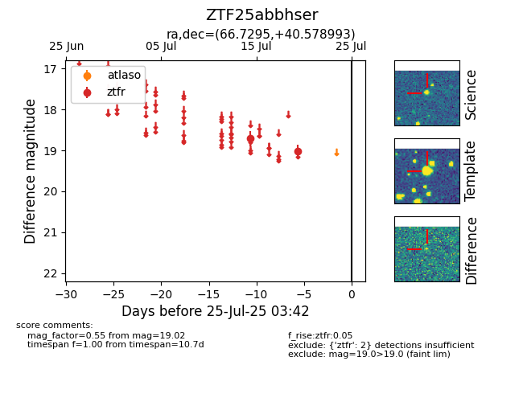

Target ZTF25abbhser at 2025-07-25 03:42, see:
FINK: fink-portal.org/ZTF25abbhser
Lasair: lasair-ztf.lsst.ac.uk/objects/ZTF25abbhser
ALeRCE: alerce.online/object/ZTF25abbhser
alt names
ZTF25abbhser (ztf,fink)
coordinates:
equatorial (ra, dec) = (66.7295,+40.57899)
galactic (l, b) = (161.0042,-5.85091)
photometry
last ztfr=19.02
2 ztfr detections
